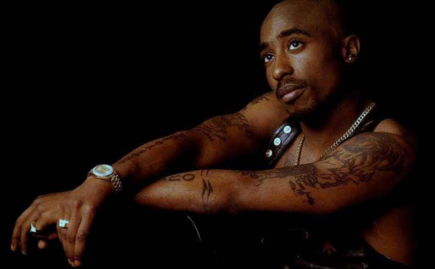

힙합의 전설, 2Pac을 소개합니다.
전설적인 래퍼, 2Pac
생애와 경력
투팍 아마루 샤커(2Pac)는 1971년 6월 16일 뉴욕에서 태어났습니다. 그는 힙합 역사상 가장 영향력 있는 인물 중 한 명으로, 정치적이고 사회적인 메시지를 담은 음악으로 유명합니다. 그의 음악은 전 세계적으로 큰 반향을 일으켰으며, 그의 생애는 수많은 논란과 업적들로 가득합니다.
그는 1996년 9월 13일, 25세의 나이로 비극적으로 생을 마감했지만, 그의 음악과 영향력은 여전히 살아있습니다.

음악과 유산
2Pac은 'California Love', 'Dear Mama', 'Changes' 등 수많은 히트곡을 남겼습니다. 그의 음악은 여전히 많은 이들에게 영감을 주고 있으며, 힙합 문화에 큰 영향을 미쳤습니다. 그의 앨범은 오늘날에도 꾸준히 사랑받고 있으며, 그의 메시지는 여전히 유효합니다.